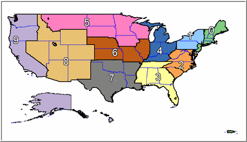

İkisel Matris Ayrıştırması (Binary Matrix Factorization)
Veri madenciliği denince pek çok kişinin aklına gelen ilk örnek, aslında, sık bulunan öğe kümeleri (frequent itemsets) örneğidir: “filanca ülkeden sitemize gelen müşterilerin aynı zamanda vs özelliklerinin olduğunu da keşfettik” gibi.
Benzer bir örnek, ki bu alan öğe kümelerinin aslında en önemli çıkış sebeplerinden birisidir, alışveriş sepeti analizidir. Müşterinin her alışverişinde sepetinde belli mallar vardır, ve bu malların hangilerinin aynı anda, aynı sepette olduğu analiz edilmeye uğraşılır. Eğer sürekli ekmek ve reçel aynı anda alınıyorsa, bu bilgi kullanılarak belki malların daha iyi konumlandırılması yapılacaktır, vs. Sık bulunan öğe kümeleri teknikleri bazen değişik adlar altında da geçebiliyor, mesela ilişki madenciliği (association mining) gibi. Algoritma olarak kullanılan pek çok teknik var, APriori iyi bilinenlerden, FPGrowth ondan daha hızlı çalışan ve daha tercih edilen bir teknik. İstatistiki bir teknik olan Çok Boyutlu Bernoulli Karışımları da bu alanda kullanılan bir yaklaşım.
Bir diğer alternatif ikisel matris ayrıştırması (binary matrix factorızation -BMF-) kullanmaktır [3]. Aynen SVD’de olduğu gibi BMF de bir matrisi ayrıştırır, fakat üç matris yerine iki matrise ayrıştırır ve hem sonuç matrisi hem de ayrıştırılan matrisler sadece 0 ya da 1 değerini taşıyabilirler. Yani bu ayrıştırma sonuç matrislerinin ikisel olmasını mecbur tutar, negatif olmayan matris ayrıştırmasının (non-negative matrix factorızation) sonuç matrisinin pozitif değerler taşımasını mecbur kılması gibi. Bunlar birer kısıtlama (constraint) ve bu sonuç o kısıtlamalara göre ortaya çıkıyor. Dikkat: BMF için toplama işlemi \(1+0 = 1, 1+1=1, 0+0 = 0\) olarak tekrar tanımlanır, yani mantıksal OR işlemi haline gelir.
Ayrıştırma öncesi hangi kerte (rank) \(k\) değerine geçmek istediğimizi biz belirtiriz. BMF’nin öğe kümeleri madenciliği için faydası şurada: öğe kümeleri ararken baktığımız öğeler kategorik şeylerdir, alışveriş sepeti örneğinde mesela ekmek, reçel gibi. Kategorik öğeleri daha önce 1-hot kodlaması (encoding) ile 1/0 değerleri taşıyan yeni kolonlara geçirebildiğimizi görmüştük. Yani tamamen kategorik değerler taşıyan veriler tamamen 1/0 taşıyacak şekilde tekrar kodlanabilir, yani ikisel matris haline getirilebilir. Bu ikisel matrisi ayrıştırdığımız zaman ve kendileri de ikisel olan iki yeni matris elde ettiğimizde ise bir anlamda boyut indirgemesi yapmış oluruz, yani sanki ana matrisi “özetleriz’‘. İşte bu özet, özellikle çarpılan “baz’’ matris, öğe kümelerinin hangileri olduğu hakkında ipuçları içeriyor olabilir.
Bir örnek üzerinde görelim, mesela altta Alice (A), Bob Marley (B) ve Prens Charles (C) verileri var. Bu kişiler için saçı uzun mu (long-haired), ünlü mü (well-known) ve bay mı (male) verileri var.
Bu matris üzerinde ikisel ayrıştırma yaparsak, \(k=2\)
Eğer kontrol etmek istersek, matris çarpımı yapmamız gerekir, bunun için
a = np.array([[1, 0],
[1, 1],
[0, 1]], dtype=bool)
b = np.array([[1, 1, 0],
[0, 1, 1]], dtype=bool)
print np.dot(a,b)[[ True True False]
[ True True True]
[False True True]]0 ve 1 değerleri görmek için 1 ile çarpmak yeterli
print 1*np.dot(a,b)[[1 1 0]
[1 1 1]
[0 1 1]]Sonuç başlangıç matrisi ile aynı, demek ki bool tipi
matris tanımlayınca Numpy çarpımı dot, çarpım sırasındaki
toplama işlemi için aritmetik toplama yerine VEYA (OR) kullanması
gerektiğini anladı.
Şimdi ayrıştırmayı analiz edelim, özellikle sol taraftaki çarpılan “baz’’ matrise bakalım.. [6] yazısından hareketle, bu yazıdaki kolon kombinasyon bakışını kullanalım (tabii toplamanın BMF için OR olduğunu unutmadan), o zaman soldaki baz matrisin dikey, kolon bazlı olarak, bir özet olduğunu görebiliyoruz. Çünkü çarpan sağ taraf bu kolonları alıp onları belli şekillerde”kombine ederek’’ nihai (orijinal) matrisi ortaya çıkartabilmeli. Bu sebeple soldaki çarpılan matris bir özet olmalı / baz oluşturmalı, ve bunun yan etkisi olarak kolonlardaki değerlerde belli bir kalıp / örüntü (pattern) olmalı. O zaman her baz kolonunda birbiriyle alakalı olan ögeler aynı anda 1 değeri taşıyor olacaktır.
Sonuca göre uzun saçlı ve ünlü olmak (1. kolon) arasında bağlantı varmış , ayrıca erkek olmak ve ünlü olmak (2. kolon) arasında da bağlantı varmış :) Veriye göre böyle en azından.. Bu sonucu orijinal matrise bakarak ta kontrol edebiliriz.
Ayrıştırma Kodlaması
BMF özel bir hesaptır ve Numpy / Scipy içinde mevcut değildir, ayrı
bir kütüphane kullanmak gereklidir, nimfa paketi içinde
gerekli kodlar var. Kurduktan sonra üstteki örneği şöyle
çözebiliriz;
import nimfa
import pandas as pd
import scipy.sparse as sp
def __fact_factor(X):
return X.todense() if sp.isspmatrix(X) else X
A = np.array([[1., 1., 0],
[1., 1., 1.],
[0, 1., 1.]])
fctr = nimfa.mf(A,
seed = "nndsvd",
rank = 2,
method = "bmf",
max_iter = 40,
initialize_only = True,
lambda_w = 1.1,
lambda_h = 1.1)
res = nimfa.mf_run(fctr)
threshold = 0.2
res1 = __fact_factor(res.basis())
res2 = __fact_factor(res.coef())
res1 = np.abs(np.round(res1 - 0.5 + threshold))
res2 = np.abs(np.round(res2 - 0.5 + threshold))
res1 = pd.DataFrame(res1, index=['long-haired','well-known','male'])
res2 = pd.DataFrame(res2, columns=['A','B','C'])
print res1
print '\n'
print res2 0 1
long-haired 1 0
well-known 1 1
male 0 1
A B C
0 1 0 0
1 0 1 1Sonuç neredeyse tıpatıp aynı; sadece çarpan matriste [0,B] kordinatı 1 değil, fakat bize lazım olan baz matris aynı çıktı.
BMF hakkında bazı ek bilgiler: [2]’ye göre en az hatalı BMF hesaplamak NP-hard zorluğunda, yani 3SAT gibi, ya da Seyahat Eden Satış Elemanı (Traveling Salesman) problemi gibi ki bu problemler kombinatoryel (combinatorial) optimizasyon problemleridir; çözüm için tüm olasılıklar denendiği ve kısayolun mevcut olmadığı çeşitten problemler. Fakat yaklaşıksal BMF metotları oldukça hızlıdır, ayrıca seyreklik çok fark yaratıyor (pozitif anlamda) ki kategorik veriler gerçek dünyada çoğunlukla seyrek olarak görülüyor. Eldeki 2000 tane mal çeşidi içinden bir sepette ancak 5-10 tane ürün oluyor mesela, tüm 2000 tane malı bir sepete koymak mümkün değil.
FPGrowth
Öğe kümeleri bulmak için BMF haricinde bir yöntem FPGrowth yöntemidir
[1,2]. Bu yöntem önce her ögeden (tek başına) kaç tane olduğunu sayar,
belli bir eşik değeri minsup altında olanları atar, sonucu
sıralar. Bu liste bir yapısına işaret eden bir başlık yapısı haline
gelir. Ağacın kendisini oluşturmak için veri satırları teker teker
işlenir, her satırdaki her öge için başlık yapısındaki en fazla değeri
taşıyan öğe önce olmak üzere tepeden başlanıp alta doğru uzayan bir ağaç
yapısı oluşturulur. Ağaçtaki her düğüm altındaki düğümün sayısal
toplamını taşır. Madencilik için alttan başlanarak yukarı doğru çıkılır
(amaç en üste ulaşmak) ve bu sırada öğeler minsup altında
ise, atılırlar. Sonuçta ulaşılan ve atılmayan yollar bir öğe kümesini
temsil ederler.
Örnek verisi olarak alttakini kullanalım,
data = [
['outlook=sunny', 'temparature=hot', 'humidity=high', 'windy=false', 'play=no'],
['outlook=sunny', 'temparature=hot', 'humidity=high', 'windy=true', 'play=no'],
['outlook=overcast', 'temparature=hot', 'humidity=high', 'windy=false', 'play=yes'],
['outlook=rainy', 'temparature=mild', 'humidity=high', 'windy=false', 'play=yes'],
['outlook=rainy', 'temparature=cool', 'humidity=normal', 'windy=false', 'play=yes'],
['outlook=rainy', 'temparature=cool', 'humidity=normal', 'windy=true', 'play=no'],
['outlook=overcast', 'temparature=cool', 'humidity=normal', 'windy=true', 'play=yes'],
['outlook=sunny', 'temparature=mild', 'humidity=high', 'windy=false', 'play=no'],
['outlook=sunny', 'temparature=cool', 'humidity=normal', 'windy=false', 'play=yes'],
['outlook=rainy', 'temparature=mild', 'humidity=normal', 'windy=false', 'play=yes'],
['outlook=sunny', 'temparature=mild', 'humidity=normal', 'windy=true', 'play=yes'],
['outlook=overcast', 'temparature=mild', 'humidity=high', 'windy=true', 'play=yes'],
['outlook=overcast', 'temparature=hot', 'humidity=normal', 'windy=false', 'play=yes'],
['outlook=rainy', 'temparature=mild', 'humidity=high', 'windy=true', 'play=no']
]Hava ile alakalı bazı veriler [1] bunlar; bu veriler tahmin (outlook), sıcaklık (temparature), nem (humidity), rüzgar (windy), dışarıda oyun oynayan var mı (play). Mesela ilk satırda tahmin güneşli, ısı sıcak, nem yüksek, rüzgar yok ve oyun oynayan yok. Bu şekilde bir sürü satır. Biz bu veride bir kalıp olup olmadığına bakacağız. [2]’deki kodu [1]’den aldığımız üstteki veriye uygularsak, sonuç şöyle:
import fp
items = fp.fpgrowth(data, minsup=6)
for x in items:
if len(x) > 1: print x<fp.node instance at 0x5017ef0>
Null Set 1
play=yes 9
humidity=high 1
windy=true 1
temparature=mild 1
windy=false 6
humidity=high 2
temparature=mild 1
humidity=normal 4
temparature=mild 1
humidity=normal 2
windy=true 2
temparature=mild 1
humidity=high 2
windy=true 2
temparature=mild 1
windy=false 2
humidity=high 2
temparature=mild 1
humidity=normal 1
windy=true 1
Null Set 1
play=yes 6
Null Set 1
play=yes 6
set(['play=yes', 'humidity=normal'])
set(['play=yes', 'windy=false'])Bulunan sonuçlar iki tane (tek öğeli sonuçlar da var ama onları eledik). Bunlar hakikaten veri içindeki kalıpları temsil ediyorlar. Fena değil.
Kıyas için BMF üzerinden madencilik yapalım. Önce 1-hot kodlaması yapalım, ve örnek için bir veri satırını ekrana basalım,
from sklearn.feature_extraction import DictVectorizer
import pandas as pd, re
def one_hot_dataframe(data, cols, replace=False):
vec = DictVectorizer()
mkdict = lambda row: dict((col, row[col]) for col in cols)
tmp = data[cols].apply(mkdict, axis=1)
vecData = pd.DataFrame(vec.fit_transform(tmp).toarray())
vecData.columns = vec.get_feature_names()
vecData.index = data.index
if replace is True:
data = data.drop(cols, axis=1)
data = data.join(vecData)
return (data, vecData, vec)
cols = ['outlook','temparature','humidity','windy','play']
df = pd.DataFrame(data,columns=cols)
# kolon ismini veriden cikart, cunku tekrar geri koyulacak
# fpgrowth icin veri icinde olmasi lazim
df = df.applymap(lambda x: re.sub('.*?=','',x))
df2, _, _ = one_hot_dataframe(df, cols, replace=True)
# tek ornek ekrana bas
print df2.ix[0]humidity=high 1
humidity=normal 0
outlook=overcast 0
outlook=rainy 0
outlook=sunny 1
play=no 1
play=yes 0
temparature=cool 0
temparature=hot 1
temparature=mild 0
windy=false 1
windy=true 0
Name: 0, dtype: float64Şimdi BMF işletelim, \(k=4\)
import nimfa
import scipy.sparse as sp
def __fact_factor(X):
return X.todense() if sp.isspmatrix(X) else X
fctr = nimfa.mf(np.array(df2).T, seed = "nndsvd",
rank = 4, method = "bmf",
max_iter = 40, initialize_only = True,
lambda_w = 1.1, lambda_h = 1.1)
res = nimfa.mf_run(fctr)
threshold = 0.2
res1 = __fact_factor(res.basis())
res2 = __fact_factor(res.coef())
res1 = np.abs(np.round(res1 - 0.5 + threshold))
res2= np.abs(np.round(res2 - 0.5 + threshold))
res1 = pd.DataFrame(res1,index=df2.columns)
print res1 0 1 2 3
humidity=high 1 0 0 1
humidity=normal 0 1 0 0
outlook=overcast 0 0 1 0
outlook=rainy 1 0 0 0
outlook=sunny 0 0 0 1
play=no 0 0 0 1
play=yes 0 1 1 0
temparature=cool 0 0 0 0
temparature=hot 0 0 0 0
temparature=mild 1 0 0 0
windy=false 0 0 1 0
windy=true 1 0 0 0Bu sonuçları kategoriksel hale çevirip tekrar ekrana basalım,
for i in range(4):
print np.array(df2.columns)[res1.ix[:,i] == 1]['humidity=high' 'outlook=rainy' 'temparature=mild' 'windy=true']
['humidity=normal' 'play=yes']
['outlook=overcast' 'play=yes' 'windy=false']
['humidity=high' 'outlook=sunny' 'play=no']sonuç atlanabilir, buradaki “kalabalık’’ orada bir kalıp
olmadığına dair bir işaret. Ayrıştırma sonucu bu tür kolonlar ortaya
çıkabilir, diğer kolonlardaki kalıplar bütünü temsil etmeye tam
yetmemişse, arta kalan her türlü gereklilik bir yerlere tıkılabiliyor,
bu normal. 2. sonuç FPGrowth sonucunda var, güzel. 3. sonuç ta neredeyse
aynı, sadece ek olarak outlook=overcast var. Fakat, 3.
sonuç aslında önemli bir kalıp içeriyor olabilir, yani kalması daha iyi
olur.
sonuç ise çok önemli bir kalıp ve FPGrowth bunu tamamen kaçırmış!
Sebep FPGrowth’un çözüme lokal olarak erişmeye çalışıyor olması, kıyasla BMF bütüne (global) bakıyor [3]. Bu ne demektir? Bir ayrıştırmanın ne olduğunu düşünürsek, bir matrisi oluşturan çarpımı ayrıştırıyoruz ve bu ayrıştırma olduktan sonra iki matris elde ediyoruz. Bu iki matris özgündür (unique). Yani belli bir ikisel matrisi oluşturan çarpım sadece tek bir şekilde olabilir. Buradan hareketle diyebiliriz ki bu ayrıştırma bütünü göze alarak yapılmalıdır, sağı, solu tutan ama köşesi tutmayan bir ayrıştırma olmaz. Bu sebeptendir ki ayrıştırma çözümünden belli bir kapsayıcılık bekleyebiliriz.
FPGrowth ise olaya yerel bakıyor; ağaç oluştururken değişik bir sıra takip edilirse mesela değişik ağaçlar ortaya çıkabilir. Ayrıca her önemli ilişki muhakkak özgün bir dal yapısında olmayabilir. Madencilik algoritması alt dallardan başlar ve yukarıya doğru çıkar, fakat bu her zaman iyi bir yöntem midir?
Kodlama Notları
Şu kod np.round(num - 0.5 + threshold) kullanımı
yuvarlama (rounding) yapıyor, çünkü Nimfa 1 değeri yerine 0.9, 0.8 gibi
değerler üretebiliyor, ayrıca 0.1 gibi değerler de oluyor. Biz
bildiğimiz yuvarlama .5 sonrası üzerini 1 yapmak yerine
belli bir eşik değeri (threshold) üzerinden yuvarlama yaptık. Yani
eşik=0.2 ise 0.7 alta yuvarlanır ve 0 olur, 0.9 eşik üstünde olduğu için
üste yuvarlanır 1 olur.
BMF için kerte \(k\) kullanıcı tarafından seçilmeli, ama bu durum SVD, ya da GMM ile kümeleme gibi diğer yapay öğrenim metotlarından farklı değildir. Bu oynanması gereken, keşfedilmesi gereken bir değer.
Çok Değişkenli Bernoulli Karışımı Kümelemesi ile İlişkisel Madencilik
Bir diger yaklasim kümeleme üzerinden kural çıkartmak. Örnek veri olarak [7] yazısındanki Movielens 1M verisini kullanacağız. Ayrıca bu verideki posta kodu (zip) ve meslek (occupation) verisine README’ye ve bir Internet sitesine [4] danışarak sözel açıklamalarını koyduk. Böylece sonuçları yorumlamak çok daha kolay olacak.
İlişkilerin keşfi için çok değişkenli Bernoulli modelini kullanacağız, ki [8] yazısında bu kümeleme yöntemi işlendi. CDBK kullanmak için veriyi 0/1 bazına indirgeyeceğiz (ki verinin büyük bir kısmı zaten bu durumda) ardından CDBK’yı veriye uyduracağız, ve karışım öğeleri \(\theta_k\)’lerin bir nevi “şablon’’ oluşturması sebebiyle ilişki keşfini bu şablonlar üzerinden yapmaya uğraşacağız.
import pandas as pd, zipfile
import sys; sys.path.append('../stat_mixbern')
import mixbern
unames = ['user_id', 'gender', 'age', 'occupation', 'zip']
rnames = ['user_id', 'movie_id', 'rating', 'timestamp']
mnames = ['movie_id', 'title', 'genres']
with zipfile.ZipFile('../stat_ratings/ml1m.zip', 'r') as z:
users = pd.read_table(z.open('users.dat'), sep='::', header=None,names=unames)
ratings = pd.read_table(z.open('ratings.dat'), sep='::', header=None,names=rnames)
movies = pd.read_table(z.open('movies.dat'), sep='::', header=None,names=mnames)occup_map = \
{ 0: "other" or not specified,1: "academic/educator",
2: "artist",3: "clerical/admin",
4: "college/grad student",5: "customer service",
6: "doctor/health care",7: "executive/managerial",
8: "farmer",9: "homemaker",
10: "K-12 student", 11: "lawyer",
12: "programmer",13: "retired",
14: "sales/marketing",15: "scientist",
16: "self-employed",17: "technician/engineer",
18: "tradesman/craftsman",19: "unemployed",
20: "writer"}
zip_map = \
{ 0: 'Northeast', 1: 'NY Area', 2: 'DC', 3: 'Florida', 4: 'Michigan/Ohio',
5: 'North', 6: 'Illinois', 7: 'Texas / Arkansas', 8: 'Nevada / Utah',
9: 'California / Alaska'}
from sklearn.feature_extraction import DictVectorizer
def one_hot_dataframe(data, cols):
vec = DictVectorizer()
mkdict = lambda row: dict((col, row[col]) for col in cols)
tmp = vec.fit_transform(data[cols].to_dict(outtype='records')).toarray()
vecData = pd.DataFrame(tmp)
vecData.columns = vec.get_feature_names()
vecData.index = data.index
data = data.drop(cols, axis=1)
data = data.join(vecData)
return data
df = users.copy()
df['occupation'] = df.apply(lambda x: occup_map[x['occupation']], axis=1)
df['zip2'] = users['zip'].map(lambda x: int(str(x)[0]))
df['zip2'] = df.apply(lambda x: zip_map[x['zip2']], axis=1)
df['age2'] = pd.qcut(df['age'],5)
df = one_hot_dataframe(df,['occupation','gender','zip2','age2'])
df = df.drop(['zip','age'],axis=1)
df = df.set_index('user_id')ZIP kodları altta gösteriliyor

Şimdi hangi film genre’sinin (türünün) kullanıcı tarafından kaç kez alınmış olduğunu özetleyip kullanıcı verisine bitişik olarak ekleyeceğiz.
genre_iter = (set(x.split('|')) for x in movies.genres)
genres = sorted(set.union(*genre_iter))
dummies = pd.DataFrame(np.zeros((len(movies), len(genres))), columns=genres)
for i, gen in enumerate(movies.genres):
dummies.ix[i, gen.split('|')] = 1
movies_windic = movies.join(dummies.add_prefix('Genre_'))
movies_windic = movies_windic.drop(['title','genres'],axis=1)
joined = ratings.merge(movies_windic, left_on='movie_id',right_on='movie_id')
genres = joined.groupby('user_id').sum()
genres = genres.drop(['movie_id','rating','timestamp'],axis=1)
X = pd.merge(df, genres, left_index=True, right_index=True,how='left')
print X.shape(6040, 56)En iyi küme sayısı nedir? Bunun için mümkün tüm küme sayılarını deneriz, AIC sonuçlarına bakarız, sonuçlar arasından düşüş ardından ilk çıkış olduğu anı en iyi küme sayısı olarak kullanırız.
iter=40; eps=1e-15; attempts=5
for K in range(5,16):
lR,lPi,lP,lbest,aic = mixbern.EMmixtureBernoulli(X,K,iter,eps,attempts)
print K,aic5,173126.633281
6,172007.606772
7,170285.383519
8,169043.301004
9,168457.12051
10,167463.532805
11,167253.486012
12,166290.598818
13,165764.506989
14,164964.964083
15,164989.85056
16,164321.25051Sonuçlara göre \(K=14\) bu çıkış anını yakalar. Bu sayıyla tekrar kümelemeyi işletelim,
iter=40; eps=1e-15; attempts=5; K=14
lR,lPi,lP,lbest,aic = mixbern.EMmixtureBernoulli(X,K,iter,eps,attempts)
rules = np.exp(lP)def print_rule(j):
for i,r in enumerate(rules[j]):
if r > 0.5: print X.columns[i], rŞimdi bazı kuralları ekrana basalım,
print_rule(0)age2=(25, 35] 1.0
gender=M 1.0
Genre_Action 0.997646429789
Genre_Adventure 0.976908591072
Genre_Animation 0.73312197406
Genre_Children's 0.815806962254
Genre_Comedy 1.0
Genre_Crime 0.888200034236
Genre_Drama 1.0
Genre_Fantasy 0.759168898223
Genre_Film-Noir 0.535819148049
Genre_Horror 0.859145011653
Genre_Musical 0.704293299334
Genre_Mystery 0.735085517947
Genre_Romance 0.999999999621
Genre_Sci-Fi 0.98865549819
Genre_Thriller 1.0
Genre_War 0.948000910806
Genre_Western 0.59003832372125 ila 35 yaş arasındaki erkekler komedi ve aksiyon çok seviyorlar, en çok beğendiklerinin arasında en alt sırada Western var. İlginç.
print_rule(1)age2=(18, 25] 1.0
gender=M 1.0
Genre_Action 0.999999916342
Genre_Adventure 0.968035357641
Genre_Animation 0.618607301467
Genre_Children's 0.733114850427
Genre_Comedy 1.0
Genre_Crime 0.895303009556
Genre_Drama 1.0
Genre_Fantasy 0.621607330213
Genre_Horror 0.826409070694
Genre_Mystery 0.667105230382
Genre_Romance 0.962487486107
Genre_Sci-Fi 0.981703990034
Genre_Thriller 0.999998477836
Genre_War 0.884260074733Daha dar bir yaş aralığı 18-25 yaş grubu, komedi, dram, aksiyon, gerilim var, en az sevilen filmler bu sefer animasyon.
print_rule(2)gender=F 1.0
Genre_Action 1.0
Genre_Adventure 0.997753376918
Genre_Animation 0.925605697933
Genre_Children's 0.989223061984
Genre_Comedy 0.999411653044
Genre_Crime 0.978893423529
Genre_Drama 1.0
Genre_Fantasy 0.890898944372
Genre_Film-Noir 0.810452619282
Genre_Horror 0.901607018088
Genre_Musical 0.93690169152
Genre_Mystery 0.949990841295
Genre_Romance 1.0
Genre_Sci-Fi 0.999467975234
Genre_Thriller 0.997148167548
Genre_War 0.987837234705
Genre_Western 0.801075654907Bayanlar için (yaş grubu yok dikkat), üstte aksiyon var, ama romantik filmler de en üstte.
Şu da ilginç bir bulgu; meslek kolları ve adres verilerini analize dahil etmiş olmamıza rağmen kümelerin şablonu içinde hiçbiri yok! Demek ki meslekler, adresler film beğenisinde fark yaratmıyor.
Üstteki analiz müşteri bilgisine müşteri seviyesinde baktı. Eğer işlemsel (transactional) bir analiz yapıyor olsaydık, yaklaşım benzer olacaktı, sadece veri odağı biraz farklı olurdu; müşterilerin her alışveriş sepetlerine bakılacaktı mesela, bir sepete koyulan mesela ekmek, çikolata, su, bir diğerine koyulan ekmek, su, biberon gibi alımlar bir satırda 1 ile işaretli, diğerleri 0 ile işaretli olacaktı, ve kümeleme algoritması bu çok boyutlu Bernoulli veriye bir uyum yapıp şablonları raporlayacaktı.
İlginçlik - İstatistiki Ölçüt
Kümeleri uydurduktan sonra bile bu kümelerin içinde hangisinin “daha iyi’’ olduğunu bulmak için istatistiki ölçüt kullanmak faydalı olabilir. Hatta birazdan bahsedeceğimiz teknik aslında her türlü ilişki madenciliği yaklaşımı için faydalı, çünkü hangi teknik olursa olsun bize verinin belli bir grubunu”önemli’’ olarak gösterecek. Ardından biz bu grubu alıp onun ne kadar önemli olduğunun ölçütünü hesaplayabileceğiz.
Teknik şöyle: İstatistiki testlerden [9] yazı bölümünü hatırlarsak, bir ideal dağılım vardı, ve eldeki verinin bu ideale olan yakınlığını ölçüyorduk. Chi Kare testi ayrıksal bazda işliyordu, eğer eldeki sürekli fonksiyon bazlı bir dağılım ise onun ideal hesaplarını kutucuklara bölüştürüyorduk.
İlişkisel madencilikte elde ettiğimiz kural bir vektör içinde 0/1 değerleri olacak. Yaklaşım şöyle; önce verideki her kolonun tek başına oranını buluruz. Bu oranlar her kolon “dağılımının’’ birbirinden bağımsız farz edildiği”idealize’’ ortamın ölçütleri olacaklar. Veri mesela şöyle,
data = [[1,1,0,0,1],
[1,0,0,0,0],
[1,0,0,1,1],
[1,1,0,1,1],
[1,1,1,0,1],
[0,0,1,1,0],
[0,1,1,0,0]
]
data = np.array(data)
sums = data.sum(axis=0)
means = data.mean(axis=0)
print 'toplam', sums
print 'ortalama', meanstoplam [5 4 3 3 4]
ortalama [ 0.71428571 0.57142857 0.42857143 0.42857143 0.57142857]Şimdi bulunan kurallardan birini, diyelim [1,1,0,0,1],
ana veride en fazla 1 sayısına tekabül eden kolonunu seçeriz, ve bu
kolonun 1 olduğu tüm satırları bir alt küme olarak toparlarız. Bu alt
kümede diyelim 5 tane satır var, ve kuralın diğer ögeleri 1. haricinde
2. ve 5. kolonun da ‘1’ değerinde olması. O zaman, toplam 5 satır için
2. ve sonuncu satırda 50.57 ve 50.57 tane satır olmalı. Sıfır
hipotezi bağımsızlık olduğu için bu “beklenen (expected)’’ sayı. Diğer
yandan gerçek rakamlar var, bu rakamlar alt kümedeki ‘1’ değerlerinin
toplamı, ki bu da”görünen (observed)’’ sayı. Bu iki vektör üzerinden chi
kare değerini hesaplıyoruz [5, sf. 391],
\[ \chi^2 = \sum_i \frac{(O_i-E_i)^2}{E_i} \]
\(\chi^2\)’nin serbestlik derecesi 3-1=2 (çünkü kuralda 3 tane kolon var, 1. kolonu alt kümeyi bulmak için kullandık). p-değeri ne kadar yüksek ise kural o kadar ilginç diyebiliriz.
from scipy.stats.distributions import chi2
def interesting(rule):
idx = (sums*rule).argmax()
subset = data[data[:,idx] == 1]
print subset
print subset[:,rule==1]
obs = subset[:,rule==1].sum(axis=0)
exp = len(subset)*means[rule==1]
print 'gorunen (observed)', obs
print 'beklenen (expected)', exp
chi = np.sum((obs-exp)**2 / exp)
dof = rule.sum()-1
print 1-chi2.cdf(chi,dof)
rule = np.array([1,1,0,0,1])
interesting(rule)[[1 1 0 0 1]
[1 0 0 0 0]
[1 0 0 1 1]
[1 1 0 1 1]
[1 1 1 0 1]]
[[1 1 1]
[1 0 0]
[1 0 1]
[1 1 1]
[1 1 1]]
gorunen (observed) [5 3 4]
beklenen (expected) [ 3.57142857 2.85714286 2.85714286]
0.595795886519Bir başka kural deneyelim,
rule = np.array([1,0,0,0,1])
interesting(rule)[[1 1 0 0 1]
[1 0 0 0 0]
[1 0 0 1 1]
[1 1 0 1 1]
[1 1 1 0 1]]
[[1 1]
[1 0]
[1 1]
[1 1]
[1 1]]
gorunen (observed) [5 4]
beklenen (expected) [ 3.57142857 2.85714286]
0.310494434317Bu daha az ilginçmiş. Hakikaten de ilk kuralın veriye bakarak daha ilginç olduğunu söyleyebiliriz.
Gösterdiğimiz tekniği film sonuçlarında kullanmadık, bunu ödev olarak okuyucuya bırakıyoruz.
Kaynaklar
[1] Ian H. Witten, Eibe Frank, Mark A. Hall, Data Mining Practical Machine Learning Tools and Techniques
[2] Harrington, P., Machine Learning in Action
[3] Miettinen, Boolean Matrix Factorizations, http://www.mpi-inf.mpg.de/~pmiettin/slides/BooleanMatrixFactorizationsForDataMining_Antwerp_slides.pdf
[4] Zip boundary, ZIP Code FAQs, http://www.zipboundary.com/zipcode_faqs.html
[5] Rao, Linear Statistical Inference and Its Applications
[6] Bayramlı, Lineer Cebir, Matris Çarpımı, Ders 1
[7] Bayramlı, Istatistik, Pivotlama
[8] Bayramlı, Istatistik, Çok Değişkenli Bernoulli Karışımı
[9] Bayramlı, Istatistik, Pearson Chi Kare Uyum Derecesi Testi